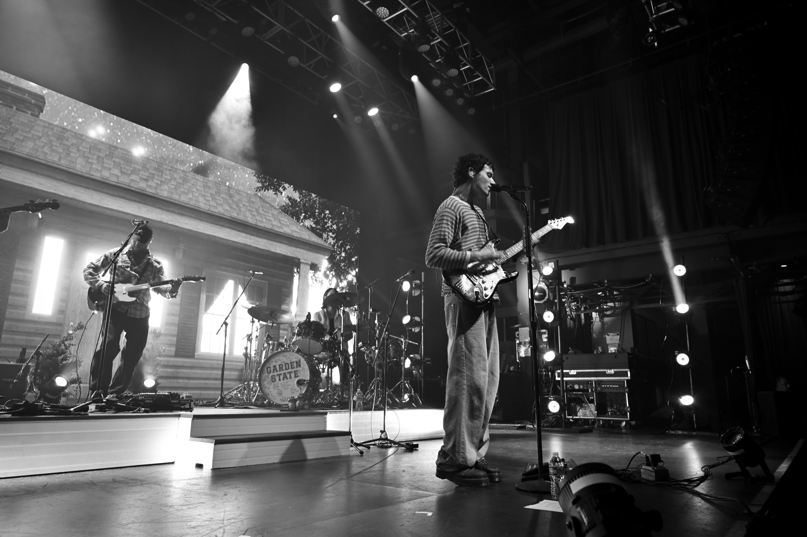

Photography

Photo taken in Utah in October 2025

Photo from a Jeremy Zucker concert in September 2025
GIS Master's Graduate | Photographer
I am a GIS professional passionate about using geospatial technology to solve environmental, infrastructure, and resilience challenges.
I have hands-on experience in ArcGIS and QGIS for tasks such as spatial analysis, fire and flood mapping, environmental vulnerability analysis, and Lidar processing.
I earned a Masters in GIS and a Bachelors in Geospatial Data Science.
Outside of GIS, I enjoy photography, musuems, music and concerts, and traveling to new places.
Spring 2023 NASA Wildland Fire Management Program Internship project on fire anomalies and statistics in the Southeastern US
GEOG 654 Class Project 2024: Flood Risk in Asheville, NC using Topographical Wetness Index and Hydrological Modeling
GEOG 660 Class Project 2024: Grand Canyon Lidar Digital Terrain Model, Digital Surface Model and Canopy Height Model Analysis
Photo taken in Utah in October 2025

Photo from a Jeremy Zucker concert in September 2025
LinkedIn: LinkedIn